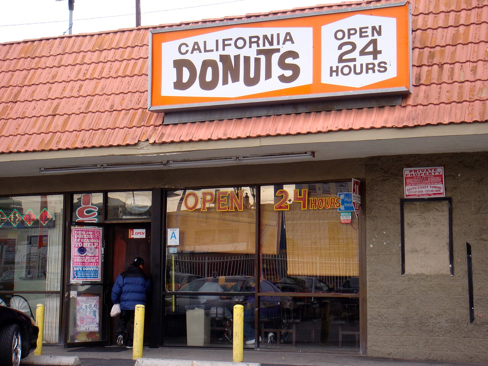
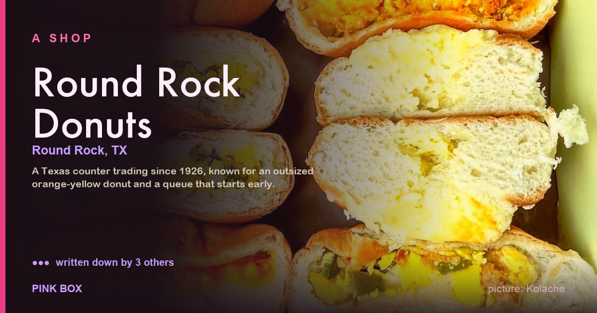
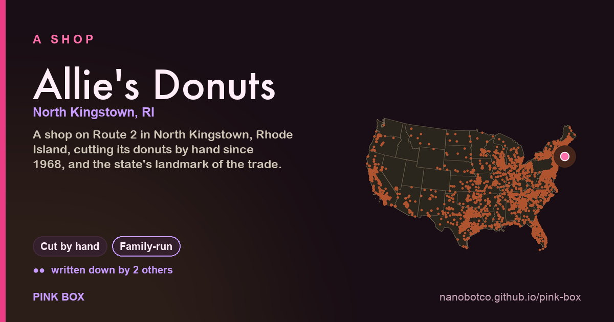
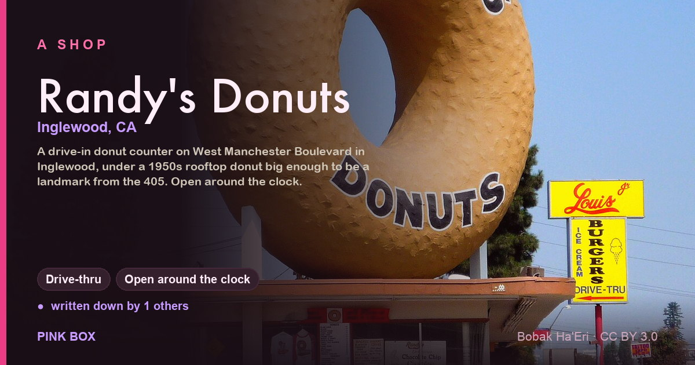
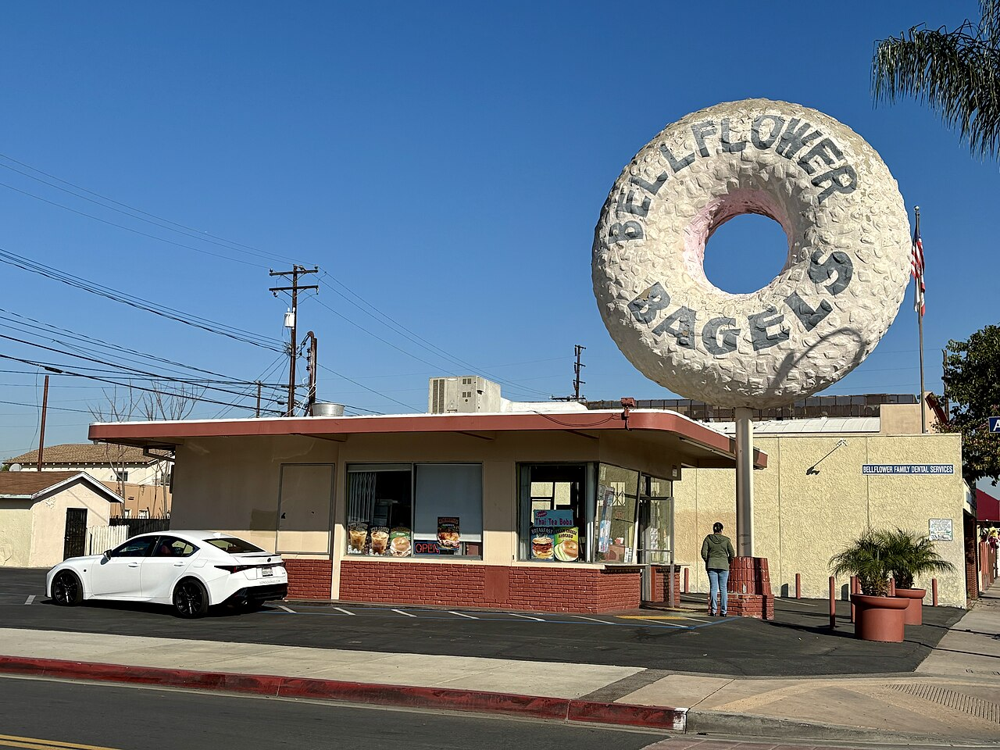
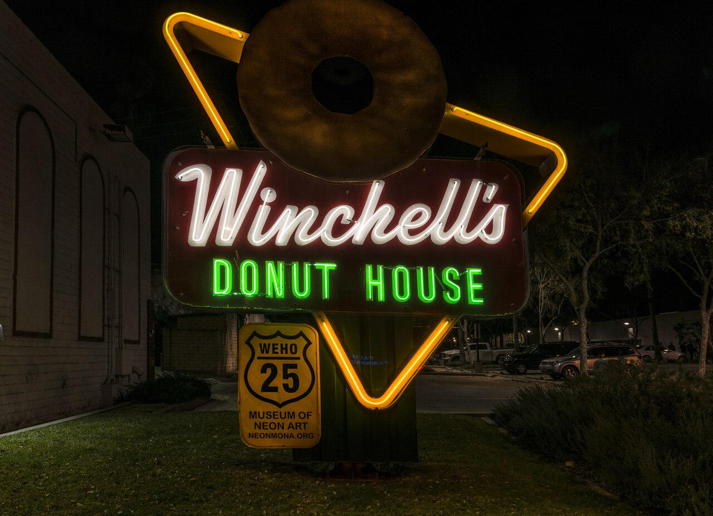
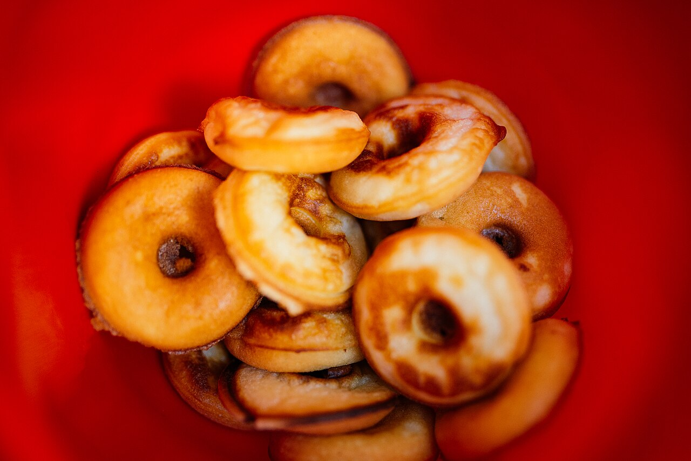
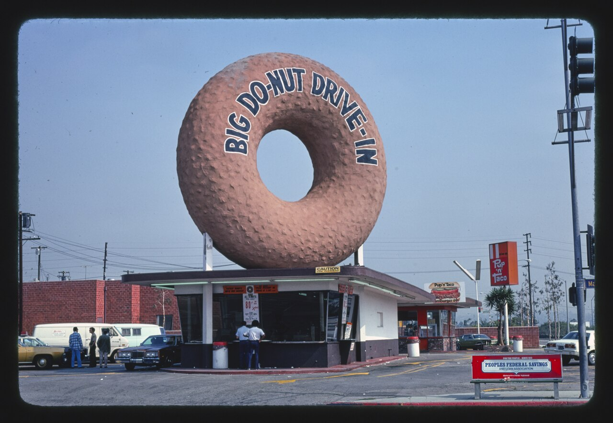
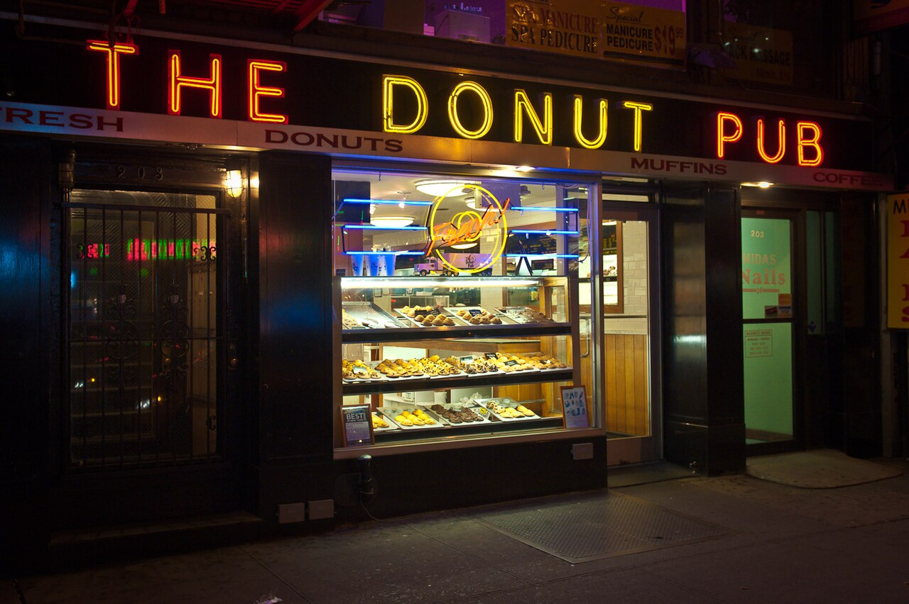

two doughs, fifty states, one pink boxPink Box
cake or raised, egg rolls in the case, and who's been up since two.
Worth the drive
Shops somebody already wrote up in print — a Beard nomination, a newspaper list, a landmark designation, an oral history. The dots count how many different people said so. Find one near you →

Round Rock Donuts ●●●Round Rock, TX — The local paper or alt-weekly, Bon Appétit, Other named recognition

Allie's Donuts ●●North Kingstown, RI — Other named recognition, Thrillist
✂ Cut by hand👪 Family-run
Randy's Donuts ●Inglewood, CA — The local paper or alt-weekly
🚗 Drive-thru🕓 Open around the clockSigns
Neon, hand-lettered boards, mascots, murals, hot donut labels. Free to use, licence sitting right under each one. See the lot →





Which donut shop are you?
Six questions about the hour you turn up, what else is on the board, and which dough you defend. A counter takes your order at the end.
Styles (15)
The pink box in Los Angeles, kolaches in Houston, cider donuts in October, paczki on Tuesday.
- California (2)
- The all-night counter
- The Southern California pink box
- Hawaii (1)
- The malasada counter
- Illinois (1)
- The Polish bakery counter
- Louisiana (1)
- The beignet stand
- Massachusetts (1)
- Dunkin' country
- North Carolina (1)
- The hot light
- New Mexico (1)
- The Southwest burrito counter
- New York (1)
- The New York corner counter
- Pennsylvania (1)
- Fastnacht Day in the Dutch counties
- Texas (1)
- The Texas kolache counter
- Other (4)
- The Delta grocery counter
- The mix-and-sign shop
- The novelty shop
- The orchard window
Donuts (21)
Raised glazed, old-fashioned, buttermilk bar, apple fritter, bear claw, maple bar, jelly bismarck, malasada.
- Both doughs (1)
- Donut holes
- Cake (5)
- Buttermilk bar
- Cake donut
- Chocolate cake
- Cider donut
- Old-fashioned
- Choux (2)
- Beignet
- French cruller
- Other (1)
- Mochi donut
- Potato (2)
- Fastnacht
- Spudnut
- Raised (10)
- Apple fritter
- Bavarian cream
- Bear claw
- Bismarck
- Glazed raised
- Long John
- Malasada
- Maple bar
- … all 10
The rest of the case (10)
Egg rolls, breakfast burritos, bacon egg and cheese, kolaches, croissant sandwiches, fried rice, boba, coffee.
- Breakfast (3)
- Bacon, egg and cheese
- Biscuits and gravy
- Breakfast burrito
- Drinks (3)
- Boba
- Coffee with chicory
- The pot of coffee
- Savoury (3)
- Egg roll
- Fried rice and chow mein
- Klobasnek
- Sweet (1)
- Kolache
Out back (12)
Yeast and proof box, cake batter and depositor, the fryer, the glaze table, the 2 a.m. shift, day-old.
- Cutting (1)
- Cutting by hand
- Finishing (3)
- Dipping and sprinkles
- The filler
- The glaze table
- Frying (2)
- The kettle
- What is in the kettle
- Holding (2)
- Day-old
- The case
- Mixing (1)
- The batter and the depositor
- The raise (2)
- The proof box
- The raise
- The shift (1)
- The night shift
Shops (17)
Strip-mall counters, drive-thrus, corner windows. Open and gone.
- California (7)
- Bob's Donuts and Pastries
- Christy's Donuts
- The Donut Hole
- Donut Wheel
- Psycho Donuts
- Randy's Donuts
- Seaside Donuts Bakery
- Hawaii (1)
- Leonard's Bakery
- Louisiana (1)
- Café du Monde
- New York (1)
- Doughnut Plant
- Oregon (2)
- Pip's Original Doughnuts & Chai
- Voodoo Doughnut
- Pennsylvania (1)
- Federal Donuts
- Rhode Island (1)
- Allie's Donuts
- Texas (2)
- Czech Stop and Little Czech Bakery
- Round Rock Donuts
- Washington (1)
- Top Pot Doughnuts
People (8)
Fryers, founders, families, the man who sold the machine, the man who sold the box.
- Cooks (1)
- Elizabeth Gregory
- Founders (5)
- Bill Rosenberg
- Ning Yen
- Russell C. Wendell
- Ted Ngoy
- Vernon Rudolph
- Inventors (2)
- Adolph Levitt
- Hanson Gregory
Outfits (12)
Suppliers, associations, box printers, archives.
- California (3)
- B & H Bakery Distributors
- Winchell's Donut House
- Yum Yum Donut Shops
- Massachusetts (2)
- Dunkin'
- Mister Donut
- North Carolina (1)
- Krispy Kreme
- New York (2)
- Doughnut Corporation of America
- National Dunking Association
- Oklahoma (1)
- Daylight Donuts
- Other (3)
- Mochinut
- The Salvation Army
- The Salvation Army doughnut huts
Days (6)
National Donut Day, Fastnacht Day, Paczki Day, Malasada Day, the first frost.
- Hawaii (1)
- Malasada Day
- Michigan (1)
- Paczki Day
- North Carolina (1)
- Krispy Kreme Challenge
- Pennsylvania (1)
- Fastnacht Day
- Other (2)
- Cider donut season
- National Donut Day
Words (13)
Sinker, bismarck, long john, fry cake, olykoek, klobasnek, day-old, the dozen.
- B (1)
- Bar
- C (1)
- Cruller
- D (3)
- Day-old
- Donut / doughnut
- Dunking
- F (1)
- Fry cake
- H (1)
- Hot now
- J (1)
- Jimmies
- M (1)
- Mom-and-pop
- O (1)
- Olykoek
- P (1)
- Powdered sugar
- T (2)
- The dozen
- The hole
Signs (6)
The giant donut on the roof, the pink box, neon, the number on the window.
- Boxes (1)
- The pink box
- Mascots (1)
- Mr. Spudnut and the mascots
- Neon (1)
- Neon and the lit sign
- Prints (1)
- The Anthora cup
- Signs (2)
- The donut on the roof
- The hand-lettered board
Stories (11)
Cake against yeast, the refugee who sold a thousand shops a pink box, why the egg rolls are there.
Plain writing is cited. Tradition holds — means folks say so; Inference — means we worked it out. It is all JSON too, and the holes are at where we stop.